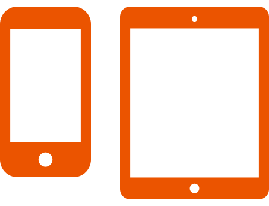
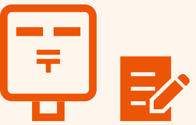
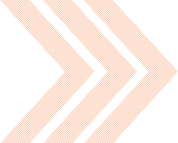
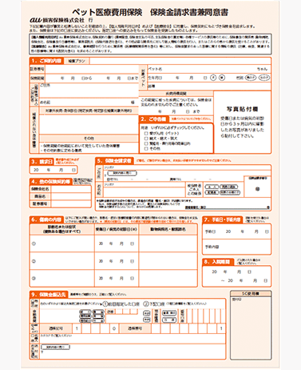
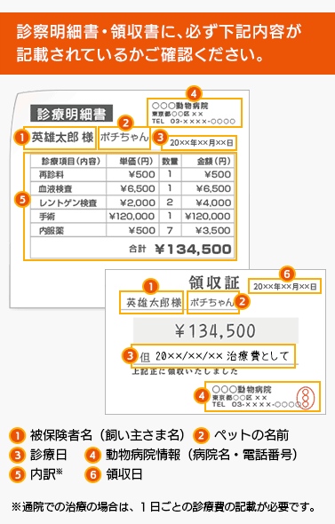

保険金のご請求について ｜ au損保

 保険金のご請求について
保険金のご請求について 
保険金のご請求からお受け取りまでの流れ
step1
病気やケガで受診・au損保へのご連絡
ケガの原因となった事故の発生の日または治療を開始した日からその日を含めて30日以内にご連絡ください。
WEBでのご連絡

保険金のご請求手続きは、パソコン・スマホ・タブレットから！！
WEBなら24時間365日受付
または
電話でのご連絡
カスタマーセンター
0800 - 700
受付時間 9:00-18:00
（年末年始を除く）
au損保 損害サービスセンターからお客さまに改めてご連絡し、その後保険金請求に必要な書類を郵送いたします。
step2
治療費のお支払い
動物病院でかかった費用は、一旦全額お支払いください。
その際、必ず診療明細書※1と領収証※2をお受け取りいただき大切に保管してください。
- ※1 診療明細書：診療項目ごとの内訳金額が記載された書類です。診療項目ごとの内訳金額が記載されていれば、レシートでもかまいません。動物病院によって名称が異なります。また、領収証を兼ねている場合もあります。
- ※2 領収証：診療費のお支払いを証するものです。レシートでもかまいません。なお、診療明細書が領収証を兼ねていることが明らかな場合は別途取り付けていただく必要はありません｡
step3
書類作成・返送

au損保からお送りした必要書類に必要事項をご記入のうえ、ご返送ください。動物病院発行の診療明細書※と領収証の原本を必ず同封してご返送をお願いいたします。
- ※診療明細書が発行されなかった場合は、au損保所定の診療明細書（保険金請求書兼同意書の裏面）の作成を動物病院にご依頼ください。
その際の明細書作成にかかる費用はお客さまご自身のご負担になりますのでご了承ください。
なお、必要に応じ他の書類等のご提出のお願いをさせていただく場合もございますので、ご協力をお願いいたします。
step4
保険金のお受け取り
au損保にて審査後、特別な場合を除き、保険金の請求書類到着から30日以内に、ご指定いただいた銀行口座にお振込みいたします。 ご郵送いただいた書類に不備等がありますと保険金のお支払いが遅れる場合がありますので、ご注意ください。
なお、審査状況に応じ、医療照会等を行う場合がありますのでご了承ください。
保険金のご請求に必要な書類

1.保険金請求書（兼同意書）
- 注）au損保 損害サービスセンターから郵送いたします。

- ◎お急ぎのときは、保険金請求書を下記よりダウンロードしてください。
- 注）記入例をよくお読みになり、すべての必要事項をご記入ください。
- 注）ご不明点は、カスタマーセンターまでお問い合わせください。
2.動物病院の診療明細書・領収証

保険金請求手続きに必要な項目となりますので、不足している項目がある場合は余白または裏面に、動物病院でご記入いただいてください。
- 注）画面はイメージです。実際とは異なる場合があります。
- 注）動物病院で診療明細書が発行されなかった場合は、au損保所定の診療明細書を上記よりダウンロードしていただき、動物病院に作成をご依頼ください。
＜ 送付先 ＞
〒150-6006 東京都渋谷区恵比寿4-20-3恵比寿ガーデンプレイスタワー6Ｆ
ａｕ損害保険株式会社 損害サービスセンター 行
- ■当ページの内容は保険金請求に関する概要を説明したものです。詳細は重要事項のご説明（重要事項説明書）、ご契約のしおり（普通保険約款・特約集）をご確認ください。